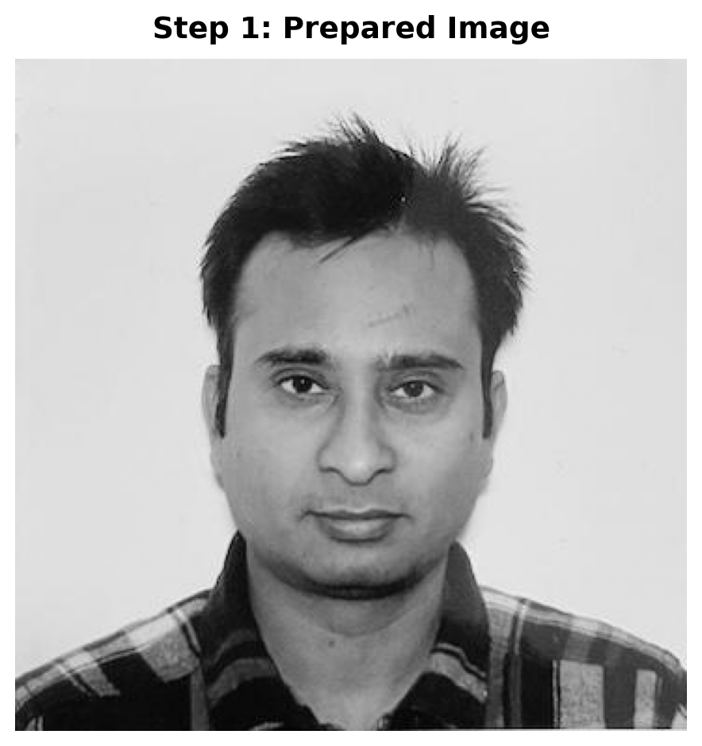
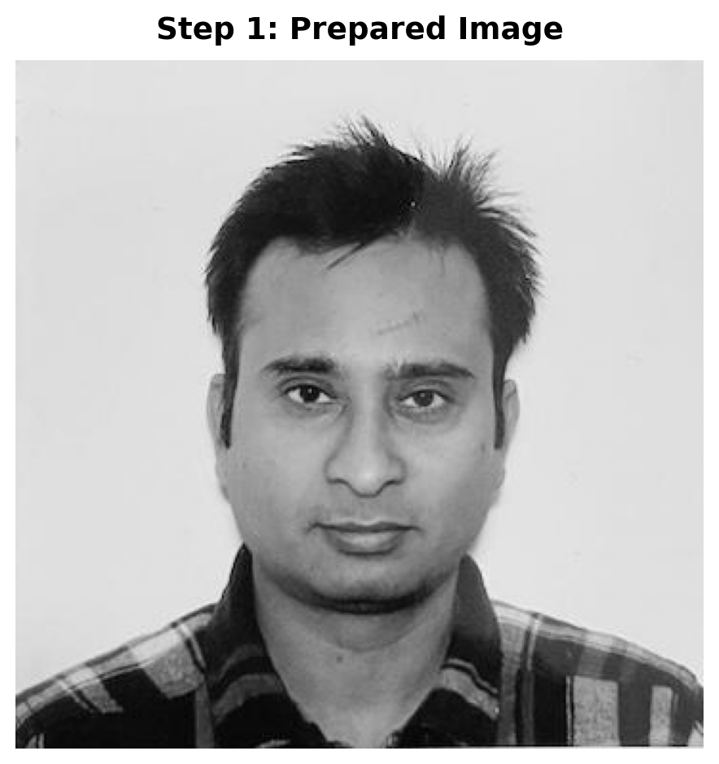
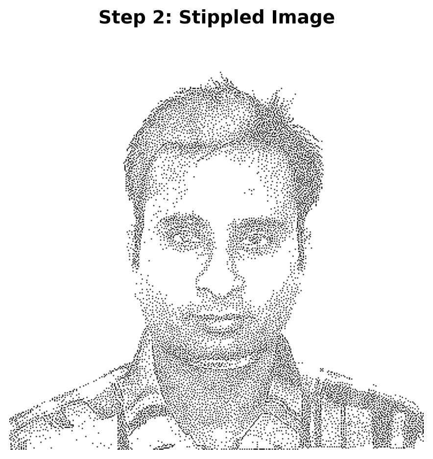
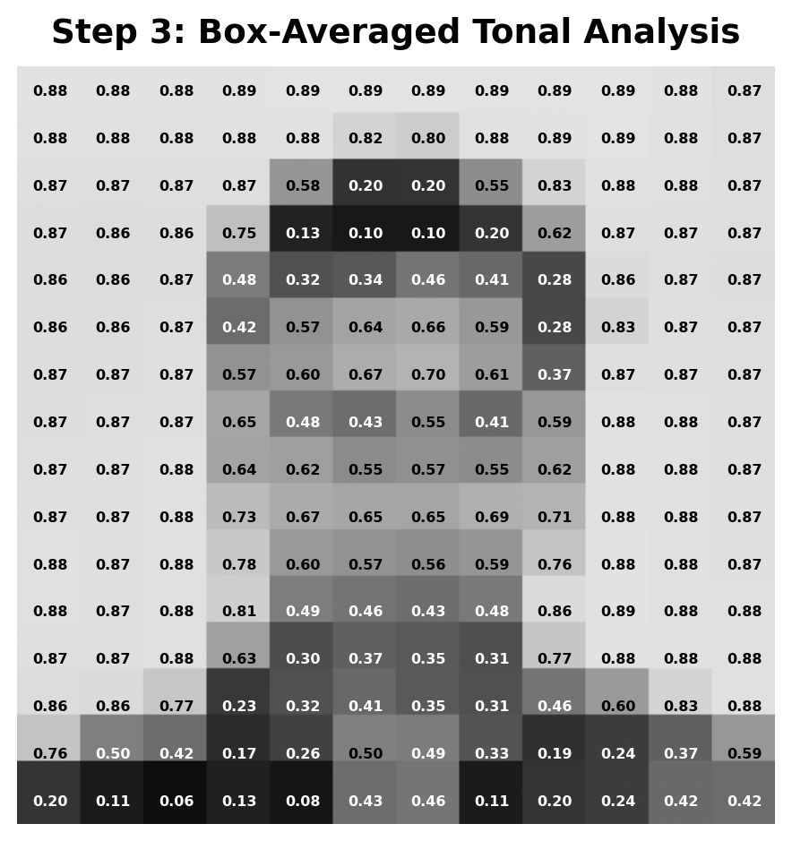
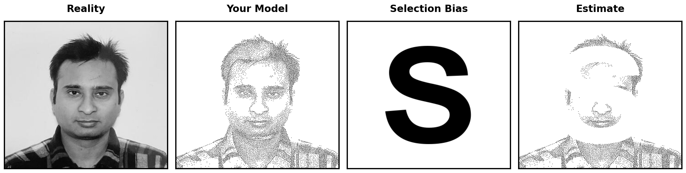

Image size: (360, 360) (no resizing needed)
Final image shape: (360, 360) (should be 2D for grayscale)
Creating a Statistics Meme: Write Your Own Functions
Your Task: Create a four-panel statistics meme demonstrating selection bias. You’ll write three Python functions yourself to complete the workflow, then assemble them into a professional meme.
Load an image, convert to grayscale, and resize to appropriate dimensions while maintaining aspect ratio.
Image size: (360, 360) (no resizing needed)
Final image shape: (360, 360) (should be 2D for grayscale)
Generate a blue noise stippling pattern from the prepared image. This creates a pattern of dots that preserves visual information while maintaining good spatial distribution.
Importance map computed
Generating blue noise stippling pattern...
Generated 10368 stipple points
Stipple pattern shape: (360, 360)
Number of stippled points (0.0 values): 10368
Number of background points (1.0 values): 119232
Create a tonal analysis by dividing the image into a grid and computing average brightness in each section. This visualizes the distribution of tones and helps identify which brightness ranges are most important.
Created tonal analysis: grid 16×12
Tonal statistics: mean=0.668, std=0.248
Tone range: [0.056, 0.891]
Task: Create a function create_block_letter_s() that generates a block letter “S” matching image dimensions.
Task: Create a function create_masked_stipple() that applies the block letter mask to the stippled image.
Task: Create a function create_statistics_meme() that assembles all four panels into a professional-looking meme.

This meme demonstrates selection bias by showing how systematic missing data patterns distort our understanding of reality. The original image (Reality) represents the true population, while the stippled version (Your Model) shows our data collection through sampling. When selection bias removes data points in a systematic “S” pattern, the resulting estimate becomes biased and no longer accurately represents the true population, just as missing data in real-world studies can lead to incorrect conclusions.
By completing this challenge, you’ll have created a memorable visual representation of selection bias that demonstrates how systematic missing data patterns can distort our understanding of reality. The skills you’ve practiced—writing modular Python functions, image processing, and creating professional visualizations—are directly applicable to real-world data analysis projects.
As you work with real datasets, remember the lesson of this meme: when data is missing in a systematic pattern rather than randomly, your estimates become biased. Recognizing and addressing selection bias is crucial for drawing valid conclusions from your data.